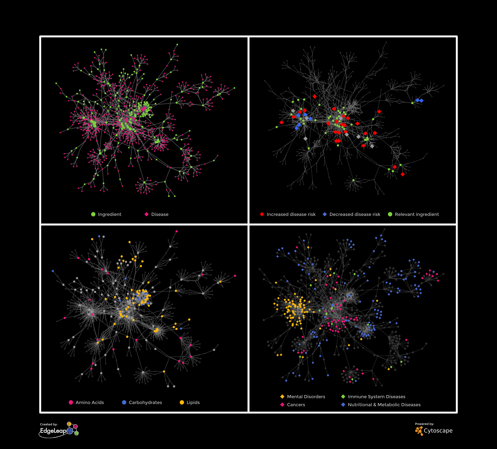
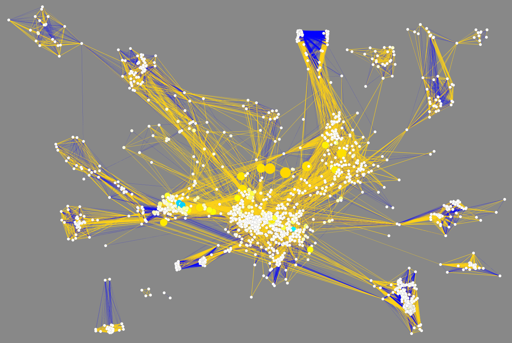
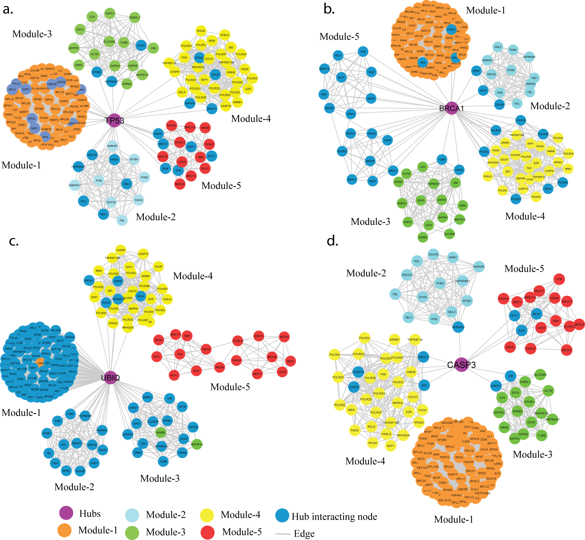
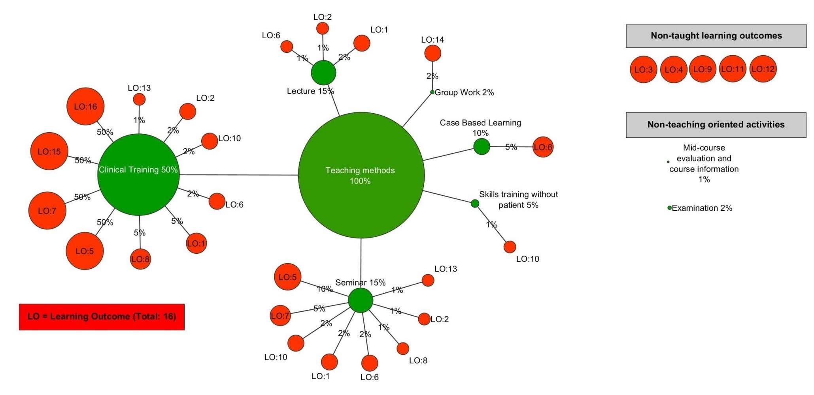
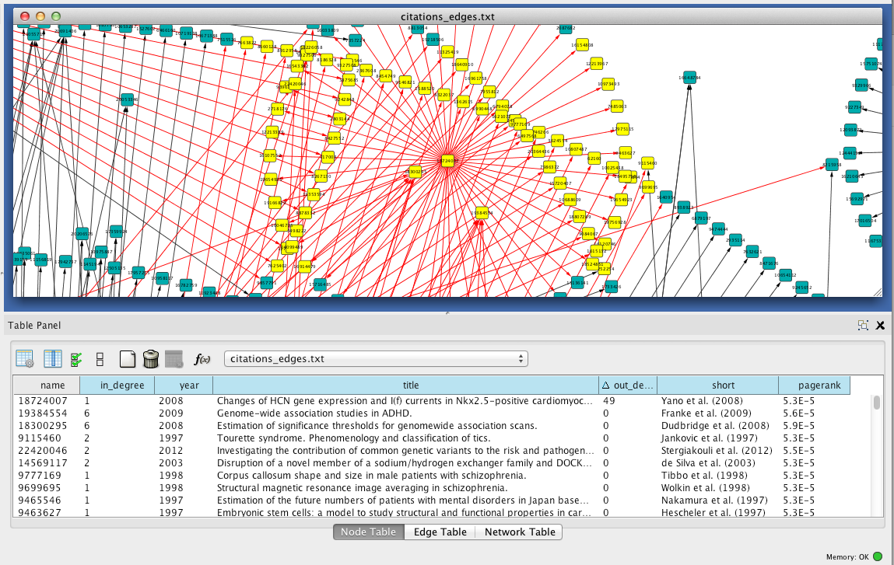
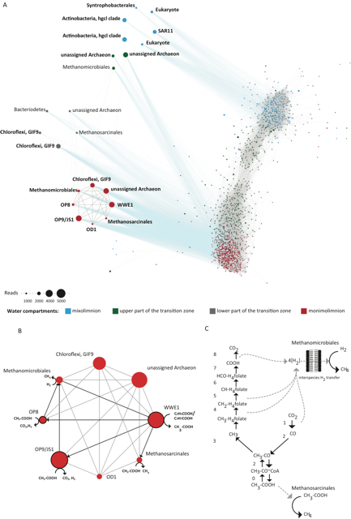
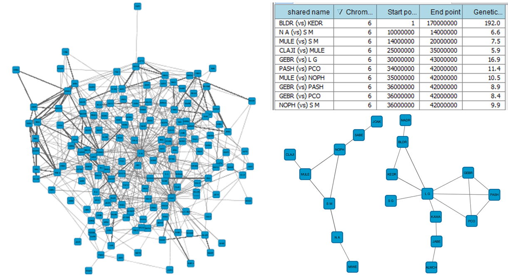
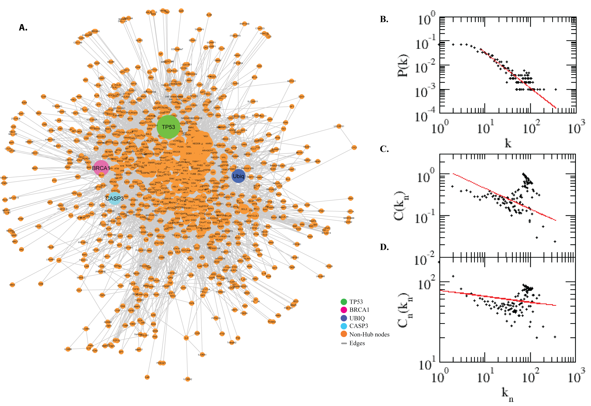

Competitions
NRNB sponsors a variety of competitions for the communities around network biology tools. These competitions range from app development to bug bounties. Check out ongoing competitions and the results of past competitions below. Also feel free to suggest a competition.
February Bug Bounty 2013
Winners
- Giovanni Dall'Olio - 47 points
- Carol Scalice - 20 points
- Anna Dieckmann - 10 points
- Dirk - 10 points
- Hideo Matsuda - 10 points
- Navin Rauniyar - 10 points
- Ramayya - 10 points
- Savvas Genitsaris - 10 points
- Michael Heuer - 8 points
Cytoscape 3.2 Launch Challenge November 2014
Winners
Best example of using Cytoscape for Biology
-

1st - Thomas Kelder: The Food - Genomics - Disease landscape: A network linking food ingredients with human disease through underlying molecular interactions.
2nd - Mark Grimes: Co-cluster correlation network of phoshporylated proteins in neuroblastoma samples.
3rd - Ponnusamy Kalaiarasan: Crosstalk among the modules and hubs in the apoptosis protein-protein interaction network.
Most novel use of Cytoscape
-

1st - Christos Vaitsis: Mapping of learning outcomes and teaching methods of one course in an undergraduate medical program.
2nd - Leandro Lima: Network of citations constructed using BioPython/PubMed API.
3rd - Steven Hallam: The image combines network analysis with single-cell genomic sequencing to infer metabolic interactions between uncultivated microbes inhabiting salt stratified Sakinaw Lake.
3rd - Sherilyn Bell: Using Cytoscape to visualize commercial personal DNA testing data such as chromosome start and end points, genetic distance, surnames etc.
Most aesthetically pleasing network visualization in Cytoscape
-

1st - Roberto Mosca: The binary protein-protein interaction landscape of Escherichia coli. Cytoscape used to generate the networks.

2nd - Daniel Himmelstein: Heterogeneous Network Visualization with Cytoscape: An Integrative Approach to the Genetics of Complex Human Disease.
3rd - Shazia Haider: Protein-protein interaction network of apoptosis regulatory protein coding genes.
Most valuable feature to add to Cytoscape
- 1st - Gordon Bean:
Provide a “wizard” user interface for simple styles based on common data-driven visualizations to:
- Teach the user about basic visual style techniques, such as mapping discrete colors to discrete node classes and using edge weights to denote edge score or strength.
- Ask the user to select attributes that match these criteria (Cytoscape can scan data for each attribute to loosely determine what attributes might be appropriate - i.e. continuous, discrete, pass-through, etc).
- Automatically bind these attributes to sensible style properties that match the rest of the style theme.
- 2nd - Mark Fortner:
Use Oracle JavaFX packager for Cytoscape installers, which package the required version of Java with the application, thus cutting down on the amount of headscratching by users.
- 3rd - Srikanth Bezawada:
- Provide case studies on social network data and visualizing transportation networks data.
- Implement generic feature to allow an app to be run on a large set of networks and allow for efficient extraction of app results to compare networks on a large scale.
- 3rd - Thomas Pfau:
Implement edges with multiple sources and targets to allow for programmatic representation of more complex interactions. For example, they could be used to represent Gene-Protein-Reaction relationships without necessitating the introduction of Enzyme subunits.
Animation/Automation Cytoscape Challenge Feb 2016
Winners
Best demonstration of cyAnimator
-
1st - Srikanth B. - TieDIE Subnetworks
The TieDIE algorithm computes a subnetwork of gene and protein interactions that connect genomic perturbations to gene expression changes characteristic of cancer subtypes. The pathways derived using the TieDIE app(algorithm) predict interlinking genes(linker nodes, yellow ones in animation) that may correspond to essential components of cancer signaling and may provide a mechanistic explanation of tumor behavior and suggest subtype-specific drug targets.
Subnetworks were generated on a GBM pathway by tuning the size parameter(from a lesser value to desirable size of subnetwork). The idea of the animation of subnetworks using CyAnimator is that it helps biologists for a closer and intuitive inspection of the events.
2nd - Adam T. - The Cell Ontology
I parsed the Cell Type Ontology using the is_a relation for edges, animated the transitions between a few different layouts, and set it to a reggae beat.
3rd - Mohammed F. - Heuristic to Travelling Salesman Problem
CySpanningTree app has a feature that creates Hamiltonian cycle using pre-order traversal. Pre-order traversal on a minimum spanning tree is one of the heuristic solutions for Travelling Salesman Problem. This video created using CyAnimator shows how the app traverses on minimum spanning tree to create a cycle.
Most valuable Cytoscape feature suggestion
- 1st - Mark F. - Automatic Node Annotation
Automatically import node annotations. By default, node annotations like gene ID, gene symbol, UniProt ID, GO terms, PFAM IDs, PDB IDs, ProSite ID, would automatically be imported. (The MyGene.info web service has a pretty comprehensive list of annotations). By default, all linkouts should work.
- 2nd - Adam T. - Drop Files
The first feature I'd like to add to Cytoscape is a drop event handler so that tables, graphs, images and annotations can be dragged in from the desktop.